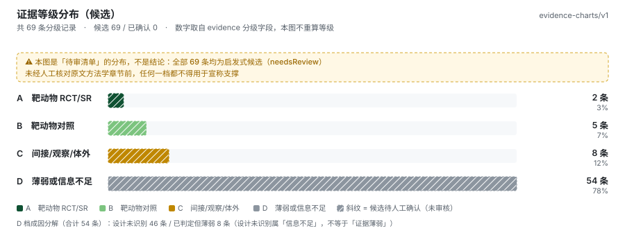
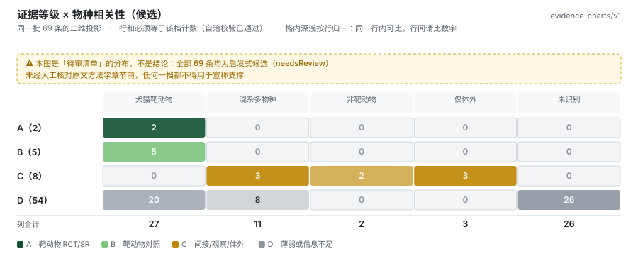
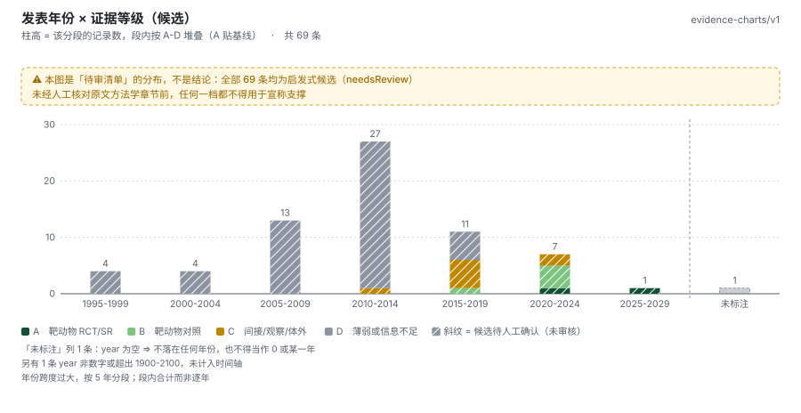
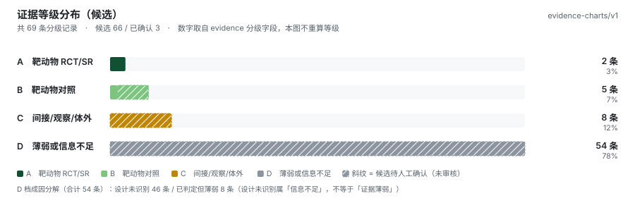

evidence-charts/v1 · 900px 固定画布 · 纯 SVG 零依赖 · 由 build-sample.cjs 生成，check-svg.py 独立校验
needsReview 恒 true）、年份缺失（null 与 n.d. 并存）、跨度 29 年触发 5 年分段。
文件名与真实运行一致，可直接替换比对。
69 条全部未经人工确认：图顶挂警示带、所有段用斜纹。这是工具的默认产出形态——它的作用是「待审清单的分布」，不是「证据结论」。



只把前 3 条（2 条 A + 1 条 B）标为已确认：警示带消失、相应段变为实色，其余仍为斜纹。同一份数据、只改确认态，用来验证「候选 ≠ 已确认」在视觉上真的可分辨。

| 判据 | 本样本中的体现 |
|---|---|
| 各档之和 = 总数 | A2 + B5 + C8 + D54 = 69 ✓（不守恒则抛错，不出图） |
| 候选 + 已确认 = 总数 | 69 + 0 = 69 / 66 + 3 = 69 ✓ |
| 矩阵行和 = 该档计数 | 图② 每一行与图① 对应档位数逐值相等 ✓ |
| 年份三态之和 = 总数 | 合法 67 + 未标注 1 + 非法 1 = 69 ✓ |
| 年份缺失 ≠ 某一年 | 图③ 右侧「未标注」列与时间轴之间画虚线断开；n.d. 计入「非法」，单独在脚注登记，两列互不混同 |
| 空年份不压缩时间轴 | 1998–2026 中未出现的年份保留为零高柱（基线细线），不是被跳过 |
| 全候选不得画成确定等级 | 图① 全候选版无任何实色等级柱（测试逐色断言）；图例明写「斜纹 = 候选待人工确认」 |
| D 档成因分开 | 图① 脚注区分「设计未识别」（信息不足）与「已判定但薄弱」——这两类混读会把「没读出来」当成「结论弱」 |
| 几何不越界 | 6 个文件、JS geomCheck 与 Python check-svg.py 双路径各 0 违规 ✓ |